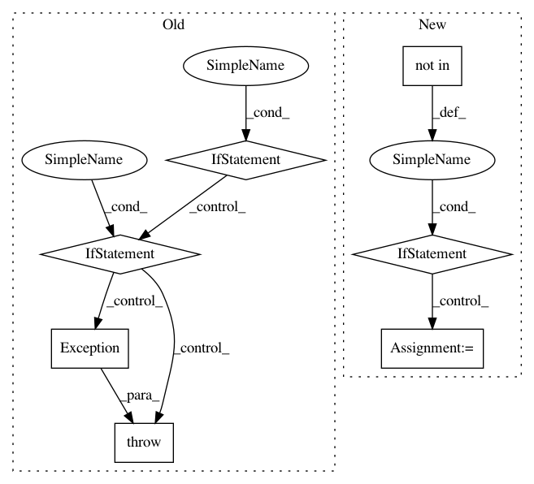

d1e6e624ef891543c5bba32bb0a696d350714693,coremltools/models/utils.py,,_convert_nn_spec_to_half_precision,#Any#,172
Before Change
for layer in layers:
layer_type = layer.WhichOneof("layer")
if layer_type in ignored_layers:
continue
// Convolution
if layer_type == "convolution":
_wp_to_fp16wp(layer.convolution.weights)
if layer.convolution.hasBias:
_wp_to_fp16wp(layer.convolution.bias)
// Batchnorm
elif layer_type == "batchnorm":
_wp_to_fp16wp(layer.batchnorm.gamma)
_wp_to_fp16wp(layer.batchnorm.beta)
_wp_to_fp16wp(layer.batchnorm.mean)
_wp_to_fp16wp(layer.batchnorm.variance)
// InnerProduct
elif layer_type == "innerProduct":
_wp_to_fp16wp(layer.innerProduct.weights)
if layer.innerProduct.hasBias:
_wp_to_fp16wp(layer.innerProduct.bias)
// batchedMatmul
elif layer_type == "batchedMatmul":
_wp_to_fp16wp(layer.batchedMatmul.weights)
if layer.batchedMatmul.hasBias:
_wp_to_fp16wp(layer.batchedMatmul.bias)
// Embedding layer
elif layer_type == "embedding":
_wp_to_fp16wp(layer.embedding.weights)
if layer.embedding.hasBias:
_wp_to_fp16wp(layer.embedding.bias)
// EmbeddingND layer
elif layer_type == "embeddingND":
_wp_to_fp16wp(layer.embeddingND.weights)
if layer.embeddingND.hasBias:
_wp_to_fp16wp(layer.embeddingND.bias)
// Scale layer
elif layer_type == "scale":
_wp_to_fp16wp(layer.scale.scale)
if layer.scale.hasBias:
_wp_to_fp16wp(layer.scale.bias)
// Bias layer
elif layer_type == "bias":
_wp_to_fp16wp(layer.bias.bias)
// LoadConstant layer
elif layer_type == "loadConstant":
_wp_to_fp16wp(layer.loadConstant.data)
// Activation layer
elif layer_type == "activation":
activation_type = layer.activation.WhichOneof("NonlinearityType")
if activation_type == "PReLU":
_wp_to_fp16wp(layer.activation.PReLU.alpha)
elif activation_type == "parametricSoftplus":
_wp_to_fp16wp(layer.activation.parametricSoftplus.alpha)
_wp_to_fp16wp(layer.activation.parametricSoftplus.beta)
// Simple Recurrent
elif layer_type == "simpleRecurrent":
_wp_to_fp16wp(layer.simpleRecurrent.weightMatrix)
_wp_to_fp16wp(layer.simpleRecurrent.recursionMatrix)
if layer.simpleRecurrent.hasBiasVector:
_wp_to_fp16wp(layer.simpleRecurrent.biasVector)
// GRU
elif layer_type == "gru":
// Weight Matrix
_wp_to_fp16wp(layer.gru.updateGateWeightMatrix)
_wp_to_fp16wp(layer.gru.resetGateWeightMatrix)
_wp_to_fp16wp(layer.gru.outputGateWeightMatrix)
// Recursion Weights
_wp_to_fp16wp(layer.gru.updateGateRecursionMatrix)
_wp_to_fp16wp(layer.gru.resetGateRecursionMatrix)
_wp_to_fp16wp(layer.gru.outputGateRecursionMatrix)
if layer.gru.hasBiasVectors:
_wp_to_fp16wp(layer.gru.updateGateBiasVector)
_wp_to_fp16wp(layer.gru.resetGateBiasVector)
_wp_to_fp16wp(layer.gru.outputGateBiasVector)
// LSTM Layers
elif layer_type in ["uniDirectionalLSTM", "biDirectionalLSTM"]:
def _lstmwp_to_fp16_lstmwp(lstm_wp, has_peephole=True):
assert lstm_wp
_wp_to_fp16wp(lstm_wp.inputGateWeightMatrix)
_wp_to_fp16wp(lstm_wp.forgetGateWeightMatrix)
_wp_to_fp16wp(lstm_wp.blockInputWeightMatrix)
_wp_to_fp16wp(lstm_wp.outputGateWeightMatrix)
_wp_to_fp16wp(lstm_wp.inputGateRecursionMatrix)
_wp_to_fp16wp(lstm_wp.forgetGateRecursionMatrix)
_wp_to_fp16wp(lstm_wp.blockInputRecursionMatrix)
_wp_to_fp16wp(lstm_wp.outputGateRecursionMatrix)
_wp_to_fp16wp(lstm_wp.inputGateBiasVector)
_wp_to_fp16wp(lstm_wp.forgetGateBiasVector)
_wp_to_fp16wp(lstm_wp.blockInputBiasVector)
_wp_to_fp16wp(lstm_wp.outputGateBiasVector)
if has_peephole:
_wp_to_fp16wp(lstm_wp.inputGatePeepholeVector)
_wp_to_fp16wp(lstm_wp.forgetGatePeepholeVector)
_wp_to_fp16wp(lstm_wp.outputGatePeepholeVector)
if layer_type == "uniDirectionalLSTM":
_lstmwp_to_fp16_lstmwp(
lstm_wp=layer.uniDirectionalLSTM.weightParams,
has_peephole=layer.uniDirectionalLSTM.params.hasPeepholeVectors
)
elif layer_type == "biDirectionalLSTM":
for lstm_wp in layer.biDirectionalLSTM.weightParams:
_lstmwp_to_fp16_lstmwp(
lstm_wp=lstm_wp,
has_peephole=layer.biDirectionalLSTM.params.hasPeepholeVectors
)
elif layer_type == "custom":
print ("Skipping custom layer {}. Weights for this layer need to"
"be converted manually".format(layer.name))
continue
elif layer_type in quantized_layers:
raise Exception("Half precision for " + layer_type +
" not yet implemented\n")
else:
raise Exception("Unknown layer " + layer_type)
return spec
After Change
"be converted manually".format(layer.name))
continue
if layer_type not in quantized_layers:
params = getattr(layer, layer_type, None)
params = params.ListFields() if params else []
param_types = [p[0].message_type.name if p[0].message_type else None for p in params]
if "WeightParams" in param_types:
raise NotImplementedError("Quantization for layer "" + layer_type + "" not implemented.")
continue // print("Skipping layer {}. No need to quantize.".format(layer.name))
// Convolution
if layer_type == "convolution":
_wp_to_fp16wp(layer.convolution.weights)
if layer.convolution.hasBias:
_wp_to_fp16wp(layer.convolution.bias)
In pattern: SUPERPATTERN
Frequency: 3
Non-data size: 7
Instances
Project Name: apple/coremltools
Commit Name: d1e6e624ef891543c5bba32bb0a696d350714693
Time: 2019-08-20
Author: smq@apple.com
File Name: coremltools/models/utils.py
Class Name:
Method Name: _convert_nn_spec_to_half_precision
Project Name: keras-team/keras
Commit Name: ee8ff00a2a8a307c952fb8e7bef241188c7fb12b
Time: 2016-07-03
Author: francois.chollet@gmail.com
File Name: keras/backend/tensorflow_backend.py
Class Name:
Method Name: pool2d
Project Name: acl-org/acl-anthology
Commit Name: 7419eacac2dfa909b280881524e685d7ea4d7ec7
Time: 2020-04-24
Author: post@cs.jhu.edu
File Name: bin/add_attachments.py
Class Name:
Method Name: add_attachment